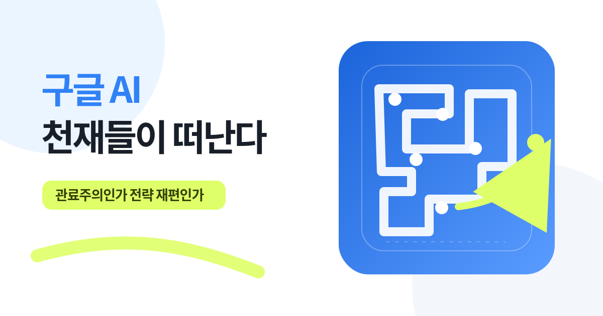
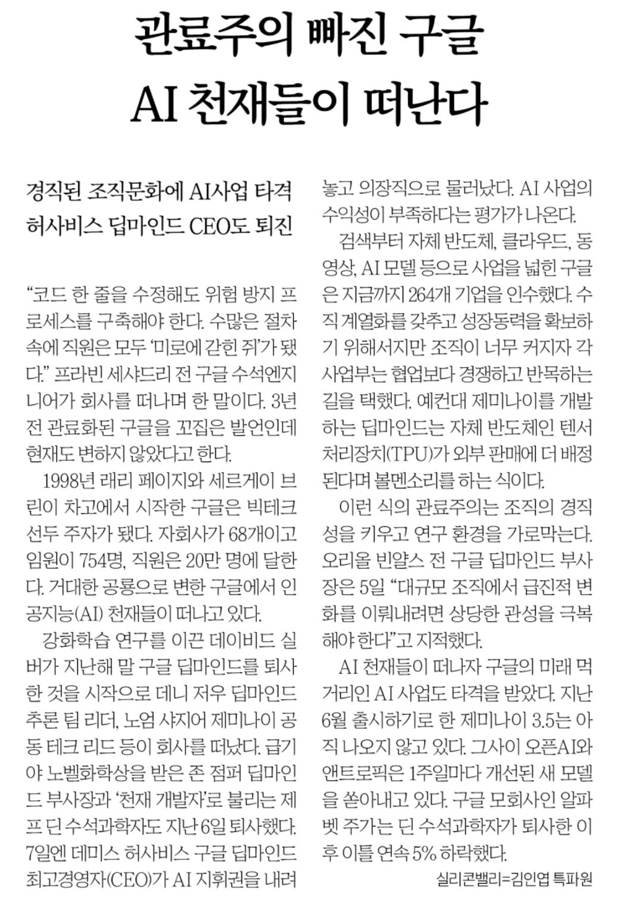

인재 이탈은 실제다
David Silver, Noam Shazeer, John Jumper와 Discovery Loop 창업자 4명을 합치면 공개 확인된 핵심 인재만 7명이다. [출처 14]
제프 딘까지 떠났다는 신문을 보고 이름과 숫자를 하나씩 다시 확인했다. 인재 이탈은 사실이다. 하지만 허사비스는 회사를 떠난 게 아니고, 구글 AI 사업도 무너진 상태는 아니었다.

David Silver, Noam Shazeer, John Jumper와 Discovery Loop 창업자 4명을 합치면 공개 확인된 핵심 인재만 7명이다. [출처 14]
CEO·일상 운영에서 물러났지만 Google DeepMind 의장과 Alphabet Chief Scientist로 남았다.
9.5억 사용자와 82% Cloud 성장이 있어도, 핵심 모델 지연과 지식 유출이 겹치면 조직은 흔들린다.
신문을 보다가 제목에서 눈이 멈췄다.“관료주의에 빠진 구글, AI 천재들이 떠난다.”

제프 딘까지 나갔다면 그냥 이직 뉴스가 아니다. 그래서 기사 문장을 그대로 받아들이기보다 인물, 직책, 날짜, 주가를 다시 확인했다.
결론은 단순하다. 인재는 떠났다. 하지만 구글 AI가 무너졌다는 결론은 아직 빠르다.
데미스 허사비스는 CEO와 일상 운영에서 물러났지만 Google DeepMind 의장과 Alphabet Chief Scientist로 남았다. 반대로 노엄 샤지어는 OpenAI, 존 점퍼는 Anthropic으로 이동했고, 제프 딘을 포함한 4명은 Discovery Loop를 세웠다. [출처 2] [출처 3] [출처 5] [출처 6]
기사의 문제의식은 충분히 타당하다. 다만 ‘퇴진’, ‘수익성’, ‘이틀 연속 5%’처럼 한 단어가 결론을 바꾸는 부분은 원자료로 다시 봤다.
| 신문에서 읽히는 주장 | 판정 | 확인된 사실 | 내 해석 |
|---|---|---|---|
| “허사비스 CEO도 퇴진” | 맥락 필요 | CEO와 day-to-day 운영은 내려놓았다. 하지만 Google DeepMind 의장, Alphabet Chief Scientist, Isomorphic Labs CEO로 남았다. [출처 2] | 퇴사나 축출보다는 ‘운영→장기 전략·과학’ 역할 전환에 가깝다. |
| “AI 천재들이 떠난다” | 사실 | 2026년 공개 확인된 핵심 인재만 최소 7명이다. 이 중 4명은 Discovery Loop, 2명은 경쟁사, 1명은 독립 연구회사로 이동했다. [출처 3] [출처 4] [출처 14] | 한두 명의 개인 이직이 아니라 기술 리더십의 동시 재편이다. |
| “6월 예정 Gemini 3.5가 아직 안 나왔다” | 사실 | Flagship인 Gemini 3.5 Pro는 원래 6월 예정이었고, 7월 21~22일에도 partner testing 상태였다. [출처 8] [출처 9] | Flash 계열 출시는 이어졌지만, 시장이 기다린 Pro 지연은 execution 리스크다. |
| “주가가 이틀 연속 5% 하락” | 표현 주의 | 종가 기준 8월 5일 -4.03%, 6일 -1.29%였다. 4일 종가 대비 6일 누적은 -5.27%다. ‘각각 5%’는 아니고 ‘이틀 누적 약 5%’라면 맞다. [출처 13] | 강한 시장 경고는 맞지만 숫자 표현은 누적과 일별을 나눠 써야 한다. |
| “AI 사업 수익성이 부족하다” | 광범위 주장 | Alphabet은 모델별 손익을 공개하지 않는다. 동시에 Cloud 매출은 82% 성장했고 영업이익도 크게 늘었다. [출처 9] [출처 10] | ‘모델 단독 수익성은 불투명’과 ‘Google AI 사업 전체가 부진’은 같은 말이 아니다. |
| “관료주의가 이탈의 원인” | 가능한 해석 | 전 임원은 승인 미로를 비판했고, 일부 당사자는 독립적 장기 연구 환경을 강조했다. 다만 모든 이탈자가 관료주의를 단일 원인으로 확인한 것은 아니다. [출처 7] [출처 11] | 관료주의, 미션, 지분, 집중도, talent war가 겹친 문제로 보는 게 안전하다. |
나는 이 기사를 ‘구글이 망한다’는 이야기로 읽지 않았다. 오히려 AI 시대에는 가장 똑똑한 사람을 뽑는 것만큼, 그 사람이 실제로 움직일 수 있게 만드는 조직이 중요하다는 이야기로 읽었다.
공개적으로 확인 가능한 사건만 시간순으로 놓으면 ‘갑작스러운 대탈출’보다, 연구 자율성과 제품 속도 사이의 긴장이 누적된 흐름에 가깝다.
AppSheet 공동창업자 출신 전 Google Cloud 임원은 승인, 법무, 성과평가, 회의와 재조직이 실행을 막는다고 비판했다. 2023년 개인 경험이지만 이후 문제를 읽는 대표 프레임이 됐다. [출처 11]
Google이 2024년 거액을 들여 복귀시킨 것으로 알려진 Transformer 논문 공동저자가 2년이 채 되기 전에 다시 떠났다. [출처 5]
2024년 노벨화학상 수상자인 John Jumper가 약 9년 만에 Google DeepMind를 떠나 Anthropic에 합류한다고 밝혔다. [출처 6]
대기업의 프로세스, 연구자의 미션, 스타트업의 소유권, 경쟁사의 인재 전쟁이 동시에 작동한다.
규모가 커지면 코드 한 줄보다 사전 조율, legal review, performance review, exec review가 더 오래 걸릴 수 있다. 전 임원의 ‘미로’ 비판은 이 구조를 보여준다. [출처 11]
David Silver는 장기 강화학습 연구가 단기 제품과 수익 압력에 휘지 않는 별도 공간을 선택했다. 최고 연구자에게 미션은 보상만큼 큰 retention 조건이다. [출처 7]
Discovery Loop는 Google과 완전히 등을 지는 구조가 아니다. Google 투자를 받고 Cloud 파트너가 되면서도, 창업팀은 회사의 방향과 속도를 직접 결정한다. [출처 2] [출처 4]
OpenAI와 Anthropic은 특정 모델·연구 목표에 집중할 수 있다는 점을 내세운다. Reuters가 인용한 분석가도 ‘덜한 관료주의와 집중된 superintelligence 추구’를 경쟁력으로 봤다. [출처 6]
헤드라인은 한쪽만 보여준다. 실제 판단은 리스크와 scale을 같은 화면에 놓고 해야 한다.
모델 지식은 문서만으로 이전되지 않는다. 암묵지와 의사결정 네트워크가 같이 빠져나간다.
Flagship 출시 약속을 넘긴 것은 경쟁이 주 단위로 움직이는 시장에서 명확한 부담이다.
Reuters는 장기 과학 미션과 Alphabet의 상업화 요구 사이 충돌을 여러 인터뷰로 보도했다. [출처 12]
Koray 체제로 책임이 명확해져도 조직·컴퓨트·제품 우선순위를 다시 맞추는 시간이 필요하다.
기술, 자본, 컴퓨트, 사용자 모두 있다. 이제 관건은 이 자원을 한 방향으로 묶고 flagship을 제때 내놓는 것이다.
8월 4일 종가를 기준으로 발표일과 다음 거래일을 비교했다. 아래는 미국 현지 GOOGL 종가다.
8월 5일과 6일에 각각 5%씩 내린 것은 아니다. 다만 8월 4일 종가에서 6일 종가까지 누적으로는 약 5.27% 떨어졌다. 7일까지 3거래일 누적은 약 6.18%다. 시장이 리더십 개편과 인재 이탈을 가볍게 보지 않은 것은 맞다. [출처 13]
Google의 실제 손실을 추정하는 계산기가 아니다. 우리 조직에서 승인·의사결정 지연이 얼마나 큰 노동비용을 묶어두는지 보는 단순 proxy다.
AI는 단순히 업무를 편하게 해주는 도구가 아니다. 전기와 모터가 인간의 물리적인 힘을 증폭했다면, AI는 처음으로 인간의 지능을 증폭한다.
그런데 이런 기술을 만드는 조직이 과거 소프트웨어의 승인 속도로 움직이면 문제가 생긴다. 기술은 매주 바뀌는데 의사결정은 분기 단위로 움직인다. 결국 가장 빠른 연구자가 가장 느린 조직에 묶이는 상황이 생긴다.
AI 인재를 붙잡는 방법은 연봉 하나가 아니다. 미션, 컴퓨트, 결정권, 출시 속도를 같이 줘야 한다.
연구·데이터·인프라·제품이 모두 의견만 내는 구조를 피한다. 최종 우선순위와 출시를 결정하는 단일 책임자를 둔다.
모델 평가, 보안, 법무 검토에 release SLO를 둔다. 답이 없으면 자동 보류가 아니라 조건부 진행으로 설계한다.
팀 간 정치로 GPU가 배정된다는 인식이 생기면 연구자는 떠난다. 기준, 우선순위, 이의제기 절차를 공개한다.
핵심 연구자 한 명의 머릿속에만 있는 지식을 평가 세트, decision log, model card, succession plan으로 남긴다.
안 되는 건 없다고 생각한다. 하지만 AI의 출력은 검수해야 하듯, AI 조직도 ‘자율성’만 외치면 안 된다. 빠르게 움직이되 누가 결정했고 무엇을 검증했는지 남기는 구조가 필요하다.
관료주의는 “문화가 답답하다”는 감정으로만 다루면 해결되지 않는다. 승인 단계, 대기 시간, 재작업, 퇴사 위험을 실제 workflow로 측정해야 한다.
아이디어에서 production까지 모든 승인과 handoff를 한 장에 놓는다.
연구 sandbox와 고객 production의 통제 강도를 분리한다.
한 사람·한 모델·한 vendor가 빠져도 멈추지 않게 만든다.
이번 사건을 과장하지 않기 위해 남겨야 할 네 가지 반론이다.